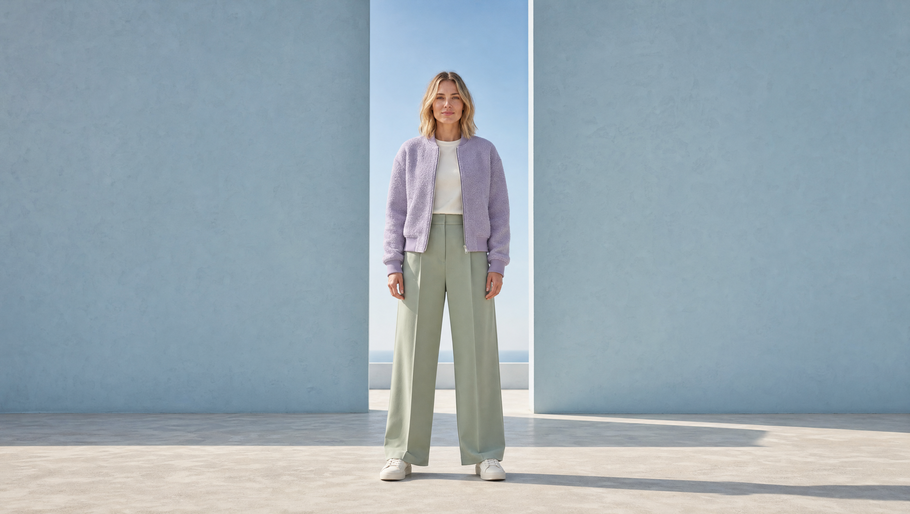

Revisa la nueva modelo, el vestuario y los cuatro efectos. Los vídeos no llevan textos ni logos: la marca se añade desde el panel de la web. Puedes pausar y recorrer cada vídeo para mirar los detalles.

Para revisar la experiencia completa, abre la web y prueba cada opción del hero y su vuelta. En escritorio, pulsa Studio → Hero · Moda para cambiar el pack; en Marca puedes añadir los logos.